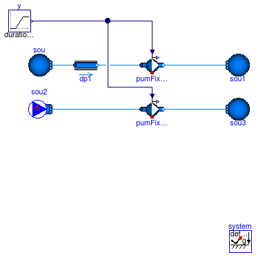
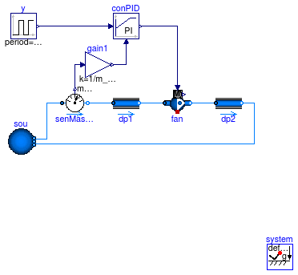
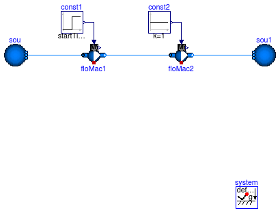
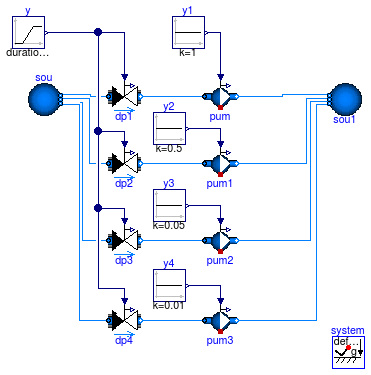

This package contains examples for the use of models that can be found in Buildings.Fluid.Movers.
Extends from Modelica.Icons.ExamplesPackage (Icon for packages containing runnable examples).
| Name | Description |
|---|---|
| Test model for pump with linear characteristic for pressure vs. flow rate | |
| Flow machine with feedback control | |
| Test model for two flow machines in parallel | |
| Test model for two flow machines in series | |
| Test model for pump that illustrates the pump curves | |
| Package with base classes for Buildings.Fluid.Movers.Examples |
 Buildings.Fluid.Movers.Examples.FlowMachine_y
Buildings.Fluid.Movers.Examples.FlowMachine_yThis example demonstrates and tests the use of a flow machine whose mass flow rate is reduced to zero.
The fans have been configured as steady-state models. This ensures that the actual speed is equal to the input signal.
Extends from Modelica.Icons.Example (Icon for runnable examples), Buildings.Fluid.Movers.Examples.BaseClasses.FlowMachine_ZeroFlow (Base class to test flow machines with zero flow rate).
| Type | Name | Default | Description |
|---|---|---|---|
| MassFlowRate | m_flow_nominal | 1 | Nominal mass flow rate [kg/s] |
| Pressure | dp_nominal | 500 | Nominal pressure difference [Pa] |
model FlowMachine_y
import Buildings;
extends Modelica.Icons.Example;
extends Buildings.Fluid.Movers.Examples.BaseClasses.FlowMachine_ZeroFlow(
gain(k=1),
redeclare Buildings.Fluid.Movers.FlowMachine_y floMacSta(
redeclare package Medium = Medium,
pressure(V_flow={0,m_flow_nominal,2*m_flow_nominal}/1.2,
dp={2*dp_nominal,dp_nominal,0}),
filteredSpeed=false),
redeclare Buildings.Fluid.Movers.FlowMachine_y floMacDyn(
redeclare package Medium = Medium,
pressure(V_flow={0,m_flow_nominal,2*m_flow_nominal}/1.2,
dp={2*dp_nominal,dp_nominal,0}),
filteredSpeed=false));
equation
connect(gain.y, floMacDyn.y);
connect(gain.y, floMacSta.y);
end FlowMachine_y;
Buildings.Fluid.Movers.Examples.FlowMachine_y_linear
This example demonstrates and tests the use of a flow machine whose speed is reduced to zero. In the top model, the pressure drop across the pump is constant, and in the bottom model, the mass flow rate across the pump is constant. In the top model, a small flow resistance has been added since a pump with zero speed cannot produce a non-zero pressure raise. For this operating region, the pressure drop ensures that the model is non-singular.
The fans have been configured as steady-state models. This ensures that the actual speed is equal to the input signal.
Extends from Modelica.Icons.Example (Icon for runnable examples).
| Type | Name | Default | Description |
|---|---|---|---|
| MassFlowRate | m_flow_nominal | 0.5 | Nominal mass flow rate [kg/s] |
| Pressure | dp_nominal | 10000 | Nominal pressure [Pa] |
model FlowMachine_y_linear
"Test model for pump with linear characteristic for pressure vs. flow rate"
extends Modelica.Icons.Example;
import Buildings;
package Medium = Buildings.Media.ConstantPropertyLiquidWater "Medium model";
parameter Modelica.SIunits.MassFlowRate m_flow_nominal = 0.5
"Nominal mass flow rate";
parameter Modelica.SIunits.Pressure dp_nominal = 10000 "Nominal pressure";
Modelica.Blocks.Sources.Ramp y(
offset=1,
duration=0.5,
startTime=0.25,
height=-1) "Input signal";
Buildings.Fluid.Sources.Boundary_pT sou(
redeclare package Medium = Medium,
use_p_in=false,
p=300000,
T=293.15,
nPorts=1);
Buildings.Fluid.Movers.FlowMachine_y pumFixDp(
redeclare package Medium = Medium,
energyDynamics=Modelica.Fluid.Types.Dynamics.SteadyState,
dynamicBalance=false,
pressure(V_flow=2/1000*{0, m_flow_nominal}, dp={2*dp_nominal, 0}),
filteredSpeed=false) "Pump with fixed pressure raise";
inner Modelica.Fluid.System system;
Buildings.Fluid.Sources.Boundary_pT sou1(
redeclare package Medium = Medium,
use_p_in=false,
p(displayUnit="Pa") = 300000 + 0.01*dp_nominal,
T=293.15,
nPorts=1);
Buildings.Fluid.FixedResistances.FixedResistanceDpM dp1(
redeclare package Medium = Medium,
m_flow_nominal=m_flow_nominal,
dp_nominal=0.01*dp_nominal) "Pressure drop";
Buildings.Fluid.Sources.MassFlowSource_T
sou2(
redeclare package Medium = Medium,
nPorts=1,
m_flow=m_flow_nominal*0.01,
T=293.15);
Buildings.Fluid.Movers.FlowMachine_y pumFixM_flow(
redeclare package Medium = Medium,
energyDynamics=Modelica.Fluid.Types.Dynamics.SteadyState,
dynamicBalance=false,
pressure(V_flow=2/1000*{0, m_flow_nominal}, dp={2*dp_nominal, 0}),
filteredSpeed=false) "Pump with fixed mass flow rate";
Buildings.Fluid.Sources.Boundary_pT sou3(
redeclare package Medium = Medium,
use_p_in=false,
p(displayUnit="Pa") = 300000 + 0.01*dp_nominal,
T=293.15,
nPorts=1);
equation
connect(pumFixDp.port_b, sou1.ports[1]);
connect(dp1.port_b, pumFixDp.port_a);
connect(dp1.port_a, sou.ports[1]);
connect(pumFixM_flow.port_b, sou3.ports[1]);
connect(sou2.ports[1], pumFixM_flow.port_a);
connect(y.y, pumFixDp.y);
connect(y.y, pumFixM_flow.y);
end FlowMachine_y_linear;
Buildings.Fluid.Movers.Examples.FlowMachine_NrpmThis example demonstrates and tests the use of a flow machine whose mass flow rate is reduced to zero.
The fans have been configured as steady-state models. This ensures that the actual speed is equal to the input signal.
Extends from Modelica.Icons.Example (Icon for runnable examples), Buildings.Fluid.Movers.Examples.BaseClasses.FlowMachine_ZeroFlow (Base class to test flow machines with zero flow rate).
| Type | Name | Default | Description |
|---|---|---|---|
| MassFlowRate | m_flow_nominal | 1 | Nominal mass flow rate [kg/s] |
| Pressure | dp_nominal | 500 | Nominal pressure difference [Pa] |
model FlowMachine_Nrpm
import Buildings;
extends Modelica.Icons.Example;
extends Buildings.Fluid.Movers.Examples.BaseClasses.FlowMachine_ZeroFlow(
gain(k=1500),
redeclare Buildings.Fluid.Movers.FlowMachine_Nrpm floMacSta(
redeclare package Medium = Medium,
pressure(V_flow={0,m_flow_nominal,2*m_flow_nominal}/1.2,
dp={2*dp_nominal,dp_nominal,0}),
filteredSpeed=false),
redeclare Buildings.Fluid.Movers.FlowMachine_Nrpm floMacDyn(
redeclare package Medium = Medium,
pressure(V_flow={0,m_flow_nominal,2*m_flow_nominal}/1.2,
dp={2*dp_nominal,dp_nominal,0}),
filteredSpeed=false));
equation
connect(gain.y, floMacSta.Nrpm);
connect(gain.y, floMacDyn.Nrpm);
end FlowMachine_Nrpm;
Buildings.Fluid.Movers.Examples.FlowMachine_dpThis example demonstrates and tests the use of a flow machine whose mass flow rate is reduced to zero.
The fans have been configured as steady-state models. This ensures that the actual speed is equal to the input signal.
Extends from Modelica.Icons.Example (Icon for runnable examples), Buildings.Fluid.Movers.Examples.BaseClasses.FlowMachine_ZeroFlow (Base class to test flow machines with zero flow rate).
| Type | Name | Default | Description |
|---|---|---|---|
| MassFlowRate | m_flow_nominal | 1 | Nominal mass flow rate [kg/s] |
| Pressure | dp_nominal | 500 | Nominal pressure difference [Pa] |
model FlowMachine_dp
import Buildings;
extends Modelica.Icons.Example;
extends Buildings.Fluid.Movers.Examples.BaseClasses.FlowMachine_ZeroFlow(
gain(k=dp_nominal),
redeclare Buildings.Fluid.Movers.FlowMachine_dp floMacSta(
redeclare package Medium = Medium,
m_flow_nominal=m_flow_nominal,
filteredSpeed=false),
redeclare Buildings.Fluid.Movers.FlowMachine_dp floMacDyn(
redeclare package Medium = Medium,
m_flow_nominal=m_flow_nominal,
filteredSpeed=false));
equation
connect(gain.y, floMacSta.dp_in);
connect(gain.y, floMacDyn.dp_in);
end FlowMachine_dp;
Buildings.Fluid.Movers.Examples.FlowMachine_m_flow
This example demonstrates and tests the use of a flow machine whose mass flow rate is reduced to zero.
The fans have been configured as steady-state models. This ensures that the actual speed is equal to the input signal.
Extends from Modelica.Icons.Example (Icon for runnable examples), Buildings.Fluid.Movers.Examples.BaseClasses.FlowMachine_ZeroFlow (Base class to test flow machines with zero flow rate).
| Type | Name | Default | Description |
|---|---|---|---|
| MassFlowRate | m_flow_nominal | 1 | Nominal mass flow rate [kg/s] |
| Pressure | dp_nominal | 500 | Nominal pressure difference [Pa] |
model FlowMachine_m_flow
import Buildings;
extends Modelica.Icons.Example;
extends Buildings.Fluid.Movers.Examples.BaseClasses.FlowMachine_ZeroFlow(
gain(k=m_flow_nominal),
redeclare Buildings.Fluid.Movers.FlowMachine_m_flow floMacSta(
redeclare package Medium = Medium,
m_flow_nominal=m_flow_nominal,
filteredSpeed=false),
redeclare Buildings.Fluid.Movers.FlowMachine_m_flow floMacDyn(
redeclare package Medium = Medium,
m_flow_nominal=m_flow_nominal,
filteredSpeed=false));
equation
connect(gain.y, floMacSta.m_flow_in);
connect(gain.y, floMacDyn.m_flow_in);
end FlowMachine_m_flow;
Buildings.Fluid.Movers.Examples.ControlledFlowMachineDynamicExtends from Modelica.Icons.Example (Icon for runnable examples), Buildings.Fluid.Movers.Examples.BaseClasses.ControlledFlowMachine.
model ControlledFlowMachineDynamic
extends Modelica.Icons.Example;
extends Buildings.Fluid.Movers.Examples.BaseClasses.ControlledFlowMachine(
fan4(dynamicBalance=true, energyDynamics=Modelica.Fluid.Types.Dynamics.FixedInitial),
fan1(dynamicBalance=true, energyDynamics=Modelica.Fluid.Types.Dynamics.FixedInitial),
fan2(dynamicBalance=true, energyDynamics=Modelica.Fluid.Types.Dynamics.FixedInitial),
fan3(dynamicBalance=true, energyDynamics=Modelica.Fluid.Types.Dynamics.FixedInitial));
end ControlledFlowMachineDynamic;
Buildings.Fluid.Movers.Examples.ControlledFlowMachineaddPowerToMedium=false since otherwise,
Dymola computes the enthalpy change of the component as a fraction (k*m_flow+P_internal)/m_flow
which leads to an error because of 0/0 at zero flow rate.
Extends from Modelica.Icons.Example (Icon for runnable examples), Buildings.Fluid.Movers.Examples.BaseClasses.ControlledFlowMachine.
model ControlledFlowMachine
import Buildings;
extends Modelica.Icons.Example;
extends Buildings.Fluid.Movers.Examples.BaseClasses.ControlledFlowMachine(
fan4(addPowerToMedium=false, filteredSpeed=false),
fan1(addPowerToMedium=false, filteredSpeed=false),
fan2(addPowerToMedium=false, filteredSpeed=false),
fan3(addPowerToMedium=false, filteredSpeed=false));
end ControlledFlowMachine;
Buildings.Fluid.Movers.Examples.FlowMachine
model FlowMachine extends Modelica.Icons.Example; import Buildings; package Medium = Buildings.Media.IdealGases.SimpleAir;Modelica.Blocks.Sources.Ramp P( height=-1500, offset=101325, duration=1.5); Buildings.Fluid.Movers.FlowMachinePolynomial fan( D=0.6858, a={4.2904,-1.387,4.2293,-3.92920,0.8534}, b={0.1162,1.5404,-1.4825,0.7664,-0.1971}, mNorMin_flow=1, mNorMax_flow=2, redeclare package Medium = Medium, m_flow_nominal=10); Modelica.Blocks.Sources.Constant N(k=22.3333); Buildings.Fluid.Sources.Boundary_pT sou( redeclare package Medium = Medium, use_p_in=true, T=293.15, nPorts=1); Buildings.Fluid.Sources.Boundary_pT sin( redeclare package Medium = Medium, use_p_in=true, T=293.15, nPorts=1); Modelica.Blocks.Sources.Constant PAtm(k=101325); Buildings.Utilities.Reports.Printer printer( nin=6, header="time dp dpNorm mNorm m_flow power"); Modelica.Blocks.Sources.RealExpression fan_mFlow(y=fan.m_flow); Modelica.Blocks.Sources.RealExpression simTim2(y=time); Modelica.Blocks.Sources.RealExpression fan_dp(y=fan.dp); Modelica.Blocks.Sources.RealExpression fan_dpNor(y=fan.pNor); Modelica.Blocks.Sources.RealExpression fan_mNor(y=fan.mNor_flow); Modelica.Blocks.Sources.RealExpression fan_PSha(y=fan.PSha); inner Modelica.Fluid.System system; Buildings.Fluid.Sensors.TemperatureTwoPort TIn(redeclare package Medium = Medium, m_flow_nominal=10); Buildings.Fluid.Sensors.TemperatureTwoPort TOut(redeclare package Medium = Medium, m_flow_nominal=10); equationconnect(simTim2.y, printer.x[1]); connect(fan_dp.y, printer.x[2]); connect(fan_dpNor.y, printer.x[3]); connect(fan_mNor.y, printer.x[4]); connect(fan_PSha.y, printer.x[6]); connect(fan_mFlow.y, printer.x[5]); connect(N.y, fan.N_in); connect(P.y, sou.p_in); connect(PAtm.y, sin.p_in); connect(sou.ports[1], TIn.port_a); connect(TIn.port_b, fan.port_a); connect(fan.port_b, TOut.port_a); connect(TOut.port_b, sin.ports[1]); end FlowMachine;
Buildings.Fluid.Movers.Examples.FlowMachineFeedbackControl
This example demonstrates the use of a fan with closed loop control. The fan is controlled to track a required mass flow rate.
Extends from Modelica.Icons.Example (Icon for runnable examples).
| Type | Name | Default | Description |
|---|---|---|---|
| MassFlowRate | m_flow_nominal | 0.1 | Nominal mass flow rate [kg/s] |
| Pressure | dp_nominal | 500 | Nominal pressure difference [Pa] |
model FlowMachineFeedbackControl "Flow machine with feedback control" import Buildings; extends Modelica.Icons.Example; package Medium = Buildings.Media.GasesPTDecoupled.MoistAirUnsaturated;inner Modelica.Fluid.System system; parameter Modelica.SIunits.MassFlowRate m_flow_nominal= 0.1 "Nominal mass flow rate"; parameter Modelica.SIunits.Pressure dp_nominal = 500 "Nominal pressure difference";Modelica.Blocks.Sources.Pulse y( offset=0.25, startTime=0, amplitude=0.5, period=15*60) "Input signal"; Buildings.Fluid.Sources.Boundary_pT sou( redeclare package Medium = Medium, use_p_in=false, p=system.p_ambient, T=293.15, nPorts=2); FixedResistances.FixedResistanceDpM dp1( redeclare package Medium = Medium, m_flow_nominal=m_flow_nominal, dp_nominal=dp_nominal/2) "Pressure drop"; Buildings.Fluid.FixedResistances.FixedResistanceDpM dp2( redeclare package Medium = Medium, m_flow_nominal=m_flow_nominal, dp_nominal=dp_nominal/2) "Pressure drop"; Buildings.Fluid.Movers.FlowMachine_y fan( redeclare package Medium = Medium, pressure(V_flow={0,m_flow_nominal,2*m_flow_nominal}/1.2, dp={2*dp_nominal,dp_nominal,0}), energyDynamics=Modelica.Fluid.Types.Dynamics.FixedInitial) "Fan"; Buildings.Fluid.Sensors.MassFlowRate senMasFlo(redeclare package Medium = Medium); Buildings.Controls.Continuous.LimPID conPID( Td=1, controllerType=Modelica.Blocks.Types.SimpleController.PI, k=0.5, Ti=15); Modelica.Blocks.Math.Gain gain1(k=1/m_flow_nominal); equationconnect(sou.ports[1], senMasFlo.port_a); connect(senMasFlo.port_b, dp1.port_a); connect(dp1.port_b, fan.port_a); connect(fan.port_b, dp2.port_a); connect(dp2.port_b, sou.ports[2]); connect(senMasFlo.m_flow, gain1.u); connect(gain1.y, conPID.u_m); connect(y.y, conPID.u_s); connect(conPID.y, fan.y); end FlowMachineFeedbackControl;
Buildings.Fluid.Movers.Examples.FlowMachineParallel_y

Extends from Modelica.Icons.Example (Icon for runnable examples).
| Type | Name | Default | Description |
|---|---|---|---|
| MassFlowRate | m_flow_nominal | 1 | Nominal mass flow rate [kg/s] |
| ThermodynamicState | state_start | Medium.setState_pTX(T=Medium... | Start state |
| Density | rho_nominal | Medium.density(state_start) | Density, used to compute fluid mass [kg/m3] |
model FlowMachineParallel_y
"Test model for two flow machines in parallel"
import Buildings;
extends Modelica.Icons.Example;
package Medium = Buildings.Media.ConstantPropertyLiquidWater;
parameter Modelica.SIunits.MassFlowRate m_flow_nominal=
1 "Nominal mass flow rate";
Buildings.Fluid.FixedResistances.FixedResistanceDpM dpIn1(
redeclare package Medium = Medium,
dp_nominal=1000,
m_flow_nominal=0.5*m_flow_nominal) "Pressure drop";
Buildings.Fluid.Movers.FlowMachine_y floMac1(
redeclare package Medium = Medium,
pressure(V_flow={0, m_flow_nominal/1000}, dp={2*4*1000, 0}),
energyDynamics=Modelica.Fluid.Types.Dynamics.FixedInitial)
"Model of a flow machine";
Buildings.Fluid.FixedResistances.FixedResistanceDpM dpOut1(
redeclare package Medium = Medium,
dp_nominal=1000,
m_flow_nominal=0.5*m_flow_nominal) "Pressure drop";
Buildings.Fluid.Sources.Boundary_pT sou(
redeclare package Medium = Medium,
use_p_in=false,
nPorts=2,
T=293.15);
Buildings.Fluid.FixedResistances.FixedResistanceDpM dpIn(
redeclare package Medium = Medium,
m_flow_nominal=m_flow_nominal,
dp_nominal=1000) "Pressure drop";
Buildings.Fluid.FixedResistances.FixedResistanceDpM dpOut3(
redeclare package Medium = Medium,
m_flow_nominal=m_flow_nominal,
dp_nominal=1000) "Pressure drop";
Modelica.Blocks.Sources.Constant const2(k=1);
parameter Medium.ThermodynamicState state_start = Medium.setState_pTX(
T=Medium.T_default,
p=Medium.p_default,
X=Medium.X_default) "Start state";
parameter Modelica.SIunits.Density rho_nominal=Medium.density(
state_start) "Density, used to compute fluid mass";
inner Modelica.Fluid.System system;
Buildings.Fluid.FixedResistances.FixedResistanceDpM dpIn2(
redeclare package Medium = Medium,
dp_nominal=1000,
m_flow_nominal=0.5*m_flow_nominal) "Pressure drop";
Buildings.Fluid.Movers.FlowMachine_y floMac2(
redeclare package Medium = Medium,
pressure(V_flow={0, m_flow_nominal/1000}, dp={2*4*1000, 0}),
energyDynamics=Modelica.Fluid.Types.Dynamics.FixedInitial)
"Model of a flow machine";
Buildings.Fluid.FixedResistances.FixedResistanceDpM dpOut2(
redeclare package Medium = Medium,
dp_nominal=1000,
m_flow_nominal=0.5*m_flow_nominal) "Pressure drop";
Modelica.Blocks.Sources.Step const1(
height=-1,
offset=1,
startTime=150);
equation
connect(dpIn1.port_b, floMac1.port_a);
connect(floMac1.port_b, dpOut1.port_a);
connect(sou.ports[1], dpIn.port_a);
connect(dpIn.port_b, dpIn1.port_a);
connect(dpOut1.port_b, dpOut3.port_a);
connect(dpOut3.port_b, sou.ports[2]);
connect(dpIn2.port_b,floMac2. port_a);
connect(floMac2.port_b,dpOut2. port_a);
connect(const2.y, floMac2.y);
connect(dpIn.port_b, dpIn2.port_a);
connect(dpOut2.port_b, dpOut3.port_a);
connect(const1.y, floMac1.y);
end FlowMachineParallel_y;
Buildings.Fluid.Movers.Examples.FlowMachineSeries_y
floMac1.dp is positive, which means that this pump has a flow resistance.
However, flowMac2.dp is always negative, as this pump has a constant control input of 1.
Extends from Modelica.Icons.Example (Icon for runnable examples).
| Type | Name | Default | Description |
|---|---|---|---|
| MassFlowRate | m_flow_nominal | 1 | Nominal mass flow rate [kg/s] |
| ThermodynamicState | state_start | Medium.setState_pTX(T=Medium... | Start state |
| Density | rho_nominal | Medium.density(state_start) | Density, used to compute fluid mass [kg/m3] |
model FlowMachineSeries_y
"Test model for two flow machines in series"
import Buildings;
extends Modelica.Icons.Example;
package Medium = Buildings.Media.ConstantPropertyLiquidWater;
parameter Modelica.SIunits.MassFlowRate m_flow_nominal=
1 "Nominal mass flow rate";
Buildings.Fluid.Movers.FlowMachine_y floMac1(
redeclare package Medium = Medium,
pressure(V_flow={0, m_flow_nominal/1000}, dp={2*4*1000, 0}),
dynamicBalance=false) "Model of a flow machine";
Buildings.Fluid.Sources.Boundary_pT sou(
redeclare package Medium = Medium,
use_p_in=false,
p(displayUnit="Pa") = 300000,
T=293.15,
nPorts=1);
Modelica.Blocks.Sources.Constant const2(k=1);
parameter Medium.ThermodynamicState state_start = Medium.setState_pTX(
T=Medium.T_default,
p=Medium.p_default,
X=Medium.X_default) "Start state";
parameter Modelica.SIunits.Density rho_nominal=Medium.density(
state_start) "Density, used to compute fluid mass";
inner Modelica.Fluid.System system;
Buildings.Fluid.Movers.FlowMachine_y floMac2(
redeclare package Medium = Medium,
pressure(V_flow={0, m_flow_nominal/1000}, dp={2*4*1000, 0}),
dynamicBalance=false) "Model of a flow machine";
Modelica.Blocks.Sources.Step const1(
height=-1,
offset=1,
startTime=150);
Buildings.Fluid.Sources.Boundary_pT sou1(
redeclare package Medium = Medium,
use_p_in=false,
p(displayUnit="Pa") = 300000 + 4000,
T=293.15,
nPorts=1);
equation
connect(const2.y, floMac2.y);
connect(const1.y, floMac1.y);
connect(floMac1.port_b, floMac2.port_a);
connect(sou.ports[1], floMac1.port_a);
connect(floMac2.port_b, sou1.ports[1]);
end FlowMachineSeries_y;
Buildings.Fluid.Movers.Examples.FlowMachine_y_pumpCurves
This example demonstrates how the pump curves changes for different (constant) input
signal y.
If y ≥ delta = 0.05, the pump curves are polynomials.
For y < delta = 0.05, the pump curves convert to linear functions to
avoid a singularity at the origin.
Extends from Modelica.Icons.Example (Icon for runnable examples).
| Type | Name | Default | Description |
|---|---|---|---|
| MassFlowRate | m_flow_nominal | 0.5 | Nominal mass flow rate [kg/s] |
| Pressure | dp_nominal | 10000 | Nominal pressure [Pa] |
model FlowMachine_y_pumpCurves
"Test model for pump that illustrates the pump curves"
extends Modelica.Icons.Example;
import Buildings;
package Medium = Buildings.Media.ConstantPropertyLiquidWater "Medium model";
parameter Modelica.SIunits.MassFlowRate m_flow_nominal = 0.5
"Nominal mass flow rate";
parameter Modelica.SIunits.Pressure dp_nominal = 10000 "Nominal pressure";
model pumpModel = Buildings.Fluid.Movers.FlowMachine_y (
redeclare package Medium = Medium,
energyDynamics=Modelica.Fluid.Types.Dynamics.SteadyState,
dynamicBalance=false,
pressure(V_flow=2/1000*m_flow_nominal*{0.2, 0.4, 0.6, 0.8},
dp=dp_nominal*{0.9, 0.85, 0.6, 0.2}))
"Declaration of pump model";
pumpModel pum(filteredSpeed=false) "Pump";
pumpModel pum1(filteredSpeed=false) "Pump";
pumpModel pum2(filteredSpeed=false) "Pump";
pumpModel pum3(filteredSpeed=false) "Pump";
Modelica.Blocks.Sources.Ramp y(
offset=1,
duration=0.5,
startTime=0.25,
height=-1) "Input signal";
Buildings.Fluid.Sources.Boundary_pT sou(
redeclare package Medium = Medium,
use_p_in=false,
p=300000,
T=293.15,
nPorts=4);
inner Modelica.Fluid.System system;
Buildings.Fluid.Sources.Boundary_pT sou1(
redeclare package Medium = Medium,
use_p_in=false,
nPorts=4,
p(displayUnit="Pa") = 300000,
T=293.15);
Buildings.Fluid.Actuators.Valves.TwoWayLinear dp1(
redeclare package Medium = Medium,
m_flow_nominal=m_flow_nominal,
dpValve_nominal=0.01*dp_nominal,
filteredOpening=false) "Pressure drop";
Modelica.Blocks.Sources.Constant
y1(k=1) "Input signal";
Buildings.Fluid.Actuators.Valves.TwoWayLinear dp2(
redeclare package Medium = Medium,
m_flow_nominal=m_flow_nominal,
dpValve_nominal=0.01*dp_nominal,
filteredOpening=false) "Pressure drop";
Modelica.Blocks.Sources.Constant
y2(k=0.5) "Input signal";
Buildings.Fluid.Actuators.Valves.TwoWayLinear dp3(
redeclare package Medium = Medium,
m_flow_nominal=m_flow_nominal,
dpValve_nominal=0.01*dp_nominal,
filteredOpening=false) "Pressure drop";
Modelica.Blocks.Sources.Constant
y3(k=0.05) "Input signal";
Buildings.Fluid.Actuators.Valves.TwoWayLinear dp4(
redeclare package Medium = Medium,
m_flow_nominal=m_flow_nominal,
dpValve_nominal=0.01*dp_nominal,
filteredOpening=false) "Pressure drop";
Modelica.Blocks.Sources.Constant
y4(k=0.01) "Input signal";
equation
connect(dp1.port_b, pum.port_a);
connect(dp1.port_a, sou.ports[1]);
connect(y1.y, pum.y);
connect(y.y, dp1.y);
connect(dp2.port_b, pum1.port_a);
connect(y.y,dp2. y);
connect(sou.ports[2], dp2.port_a);
connect(y2.y, pum1.y);
connect(dp3.port_b, pum2.port_a);
connect(y.y,dp3. y);
connect(y3.y, pum2.y);
connect(dp3.port_a, sou.ports[3]);
connect(dp4.port_b, pum3.port_a);
connect(y.y,dp4. y);
connect(y4.y, pum3.y);
connect(dp4.port_a, sou.ports[4]);
connect(pum3.port_b, sou1.ports[1]);
connect(pum2.port_b, sou1.ports[2]);
connect(pum1.port_b, sou1.ports[3]);
connect(pum.port_b, sou1.ports[4]);
end FlowMachine_y_pumpCurves;

| Type | Name | Default | Description |
|---|---|---|---|
| replaceable package Medium | PartialMedium | Medium in the component | |
| Boolean | addPowerToMedium | true | Set to false to avoid any power (=heat and flow work) being added to medium (may give simpler equations) |
| Characteristics | |||
| Boolean | use_powerCharacteristic | false | Use powerCharacteristic (vs. efficiencyCharacteristic) |
| Boolean | motorCooledByFluid | true | If true, then motor heat is added to fluid stream |
| efficiencyParameters | motorEfficiency | Normalized volume flow rate vs. efficiency | |
| efficiencyParameters | hydraulicEfficiency | Normalized volume flow rate vs. efficiency | |
| powerParameters | power | Volume flow rate vs. electrical power consumption | |
| Initialization | |||
| Real | r_V.start | 1 | Ratio V_flow/V_flow_max [1] |
| MassFlowRate | m_flow.start | 0 | Mass flow rate from port_a to port_b (m_flow > 0 is design flow direction) [kg/s] |
| Pressure | dp.start | 0 | Pressure difference between port_a and port_b [Pa] |
| Advanced | |||
| Boolean | homotopyInitialization | true | = true, use homotopy method |
| MassFlowRate | m_flow_small | 1E-4*abs(m_flow_nominal) | Small mass flow rate for regularization of zero flow [kg/s] |
| Diagnostics | |||
| Boolean | show_T | false | = true, if actual temperature at port is computed (may lead to events) |
| Dynamics | |||
| Filtered speed | |||
| Boolean | filteredSpeed | true | = true, if speed is filtered with a 2nd order CriticalDamping filter |
| Time | riseTime | 30 | Rise time of the filter (time to reach 99.6 % of the speed) [s] |
| Init | init | Modelica.Blocks.Types.Init.I... | Type of initialization (no init/steady state/initial state/initial output) |
| Real | N_start | 0 | Initial value of speed |
| Equations | |||
| Dynamics | energyDynamics | Modelica.Fluid.Types.Dynamic... | Formulation of energy balance |
| Dynamics | massDynamics | energyDynamics | Formulation of mass balance |
| Boolean | dynamicBalance | false | Set to true to use a dynamic balance, which often leads to smaller systems of equations |
| Nominal condition | |||
| Time | tau | 1 | Time constant of fluid volume for nominal flow, used if dynamicBalance=true [s] |
| Initialization | |||
| AbsolutePressure | p_start | Medium.p_default | Start value of pressure [Pa] |
| Temperature | T_start | Medium.T_default | Start value of temperature [K] |
| MassFraction | X_start[Medium.nX] | Medium.X_default | Start value of mass fractions m_i/m [kg/kg] |
| ExtraProperty | C_start[Medium.nC] | fill(0, Medium.nC) | Start value of trace substances |
| ExtraProperty | C_nominal[Medium.nC] | fill(1E-2, Medium.nC) | Nominal value of trace substances. (Set to typical order of magnitude.) |
| Assumptions | |||
| Boolean | allowFlowReversal | system.allowFlowReversal | = true to allow flow reversal, false restricts to design direction (port_a -> port_b) |
| Type | Name | Description |
|---|---|---|
| output RealOutput | P | Electrical power consumed [W] |
| output RealOutput | N_actual | [1/min] |
| replaceable package Medium | Medium in the component | |
| FluidPort_a | port_a | Fluid connector a (positive design flow direction is from port_a to port_b) |
| FluidPort_b | port_b | Fluid connector b (positive design flow direction is from port_a to port_b) |
| HeatPort_a | heatPort | Heat dissipation to environment |
| input RealInput | y | Constant normalized rotational speed [1] |
model pumpModel = Buildings.Fluid.Movers.FlowMachine_y (
redeclare package Medium = Medium,
energyDynamics=Modelica.Fluid.Types.Dynamics.SteadyState,
dynamicBalance=false,
pressure(V_flow=2/1000*m_flow_nominal*{0.2, 0.4, 0.6, 0.8},
dp=dp_nominal*{0.9, 0.85, 0.6, 0.2}))
"Declaration of pump model";